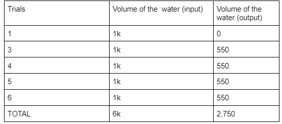

I think there is nothing in there. Think of it like a water bottle with a hole in it. If you fill it up to the line and keep going, it will eventually just let everything go back out through the hole and the water line will be back at the line right above the hole.
Something that can explain there being nothing in there is when it first leaked out the bottom corner. It could have been something just blocking it but eventually the water had moved it so it had leaked.
Another thing that can also explain it is trial number 5, when 4x the amount of water came out. If the 500mL was put in all at the same time, it could have overflowed the line while also creating waves which explains why there was so much for this one.
This is the black box model me and my team came up with, except it is just a diagram so you can get a better idea on how the parts co-exist with one another.
This is the live model of the box model, with all parts seen. However, the exit tube might be harder to see because it is see through.
This is the data chart, and it shows all of our trials and the outcomes we got fro each individual one. Each is rounded to the nearest hundred, which is why they are all so similar. 